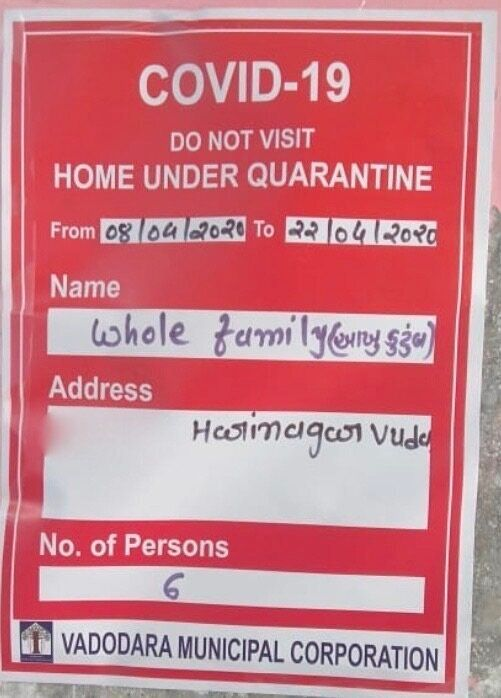

People who have a coronavirus (COVID-19) infection or are around someone who's infected should stay home to prevent spreading the virus. This is known as quarantine or isolation. Keeping your household ready can reduce stress in case that happens.
What Does Quarantine Mean?
Quarantine: This is when someone who might have been exposed to the virus but has no symptoms needs to stay home for 14 days (2 weeks).
What Does Isolation Mean?
Isolation: This is when someone who is infected with the virus and is contagious needs to stay home for 10 days after symptoms start or they have a positive test result.
How Does Someone Quarantine or Isolate at Home?
Someone who is in quarantine or isolation should stay home and away from other people to avoid spreading the virus. They should:
- Keep at least 6 feet away from other household members and pets when possible.
- Wear a mask (or face covering) if they must be around other people and can't stay 6 feet apart. Children under 2 years old and people who have trouble breathing should not wear a mask. To see how to put on and remove masks, clean them, or make your own cloth face covering, check the CDC's guide.
- Cover coughs and sneezes with a tissue, throw the tissue away, and then wash their hands right away. Wash with soap and water for at least 20 seconds, or use alcohol-based hand sanitizer.
- Wash their hands well and often. Wash with soap and water for at least 20 seconds, or use alcohol-based hand sanitizer.
- Every day, use a household cleaner or wipe to clean things that get touched a lot. These include doorknobs, light switches, toys, remote controls, sink handles, counters, and phones.
